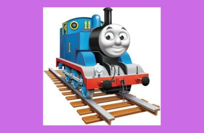

One of Ari's favorite foods is chicken fries. These are long crispy chicken shaped as french fries. Whenever Ari want's something simple to chow down on, she likes to have some chicken fries.Ari's favorite animal is a lion. The first time I asked her what her favorite animal was, she said it was a lion. This makes sense, because she is often times making 'rawr' sounds like a lion would make.Ari has been a big time fan of the baby shark song, and the show. She watches a lot of baby shark, and enjoys dancing and singing to the music.Ari loves the color blue. She likes a lot of other colors as well, and really enjoys looking at all the colors around her. She can name several colors too. But if you ask her, her favorite color is Blue.My Talking Hank is one of Ari's favorite mobile app games to play on her tablet. She likes taking care of him, exploring the islands with him, and being silly.

Ari enjoys playing with her trains, and her train set is from Thomas the Train. She really likes having the train track put together, a play with her toy trains.